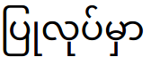
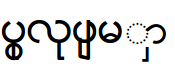
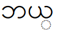
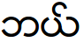
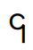
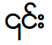
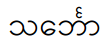

FAQ - Myanmar Scripts and Languages
- How is the Myanmar script encoded?
- What other encodings are commonly used for the Myanmar language?
- What are the differences between the Unicode and
the ad hoc encodings?
- Can we use a universal font that will display Unicode and Zawgyi text together?
- Doesn't "UTF-8" indicate Unicode?
- How can I tell what encoding is used for a particular website or piece of text?
- So isn't Unicode just another font for Myanmar?
- Are there recommended Unicode fonts for Myanmar text? Where can I find them?
- What languages can be written with Unicode Myanmar characters?
- Is it possible to convert to Unicode from other encodings?
- Should I support both Unicode and Zawgyi on my site? If so, how do I do that?
- My site has content entered by users in both Zawgyi and Unicode text. How can my users read both?
- How is Myanmar handled on mobile devices?
- How can I tell if my system is using a Unicode font or Zawgyi by default?
- My friends all use Zawgyi in email and texting, but my device only supports Unicode. How can I communicate with them?
- Do I need an IME to properly enter Myanmar text?
- Is the keyboard arrangement for Unicode different from other fonts?
- Where do I find the Unicode characters for Myanmar script?
- What about collation of Myanmar language data? Is that
just a binary sort?
- I cannot find the code points for the kinzi in Unicode. What do I do?
- I want to know how to put a virama in my text. How is this done?
- I want to read content that includes both Unicode and Zawgyi text. Can I do this?
- I am using a Unicode-compliant font on Unicode text. However, some characters are rendered incorrectly. What is wrong?
- Will everyone eventually convert to Unicode?
- I have specific questions about other languages written with Myanmar script, e.g., Pali, Sanskrit, Shan, Mon, Karen, Kayah, etc. Where can i learn more?>
How is the Myanmar script encoded?
A: The Myanmar script
was added
to the Unicode Standard in Version 3.0 (September, 1999.)
Version 5.2 significant extended the script in 2009. Unicode now has three
blocks for characters of this script:
Code points include letters (consonants and independent vowels), vowel
signs, medial signs, digits, various signs, and punctuation. Medial
and vowel signs, anusvara, visarga, virama, asat and others combine
with letters.
These code points support several languages written with the script,
including Myanmar (Burmese), Pali, Sanskrit, Shan, Mon, Karen, Kayah,
and others.
What other encodings are commonly used for the Myanmar language?
A: There are several ad hoc font encodings in common use,
all needing specific fonts to render text. The most commonly used are ZawgyiOne,
Zawgyi 2008, and Myazedi.
What are the differences between Unicode and the ad hoc encodings?
A: Unicode's Myanmar script provides:
- Compatibility across platforms, operating systems, and programming languages.
-
Unique code points for each consonant, vowel, and modifier, regardless of visual appearance.
-
Efficient use of code space.
-
The ability to support all languages that can be written with the script.
-
A unique ordering of code points for the code points comprising a
Myanmar syllable (consonants, vowels, etc.) Vowels always follow the
consonant. This allows consistent implementation of code comparison and search.
-
Font-independent representation, allowing rendering with any
Unicode-compliant font installed on a device.
The ad hoc font encodings have these serious problems:
- Not standardized. Also incompatible with Unicode, the
international standard.
-
Multiple code points for characters and combined renderings.
-
Inefficient use of the code range, requiring twice as many code points
to represent only a subset of the script.
-
No support for languages other than Myanmar, making it impossible to
show text in the other languages using this script.
-
Vowel code points may appear before or after a consonant, resulting in
multiple code point orders that represent each visual
rendering. Comparison and searching text are extremely cumbersome, if
not impossible.
-
Lack of font support. Since the appearance of a syllable depends on
the specific code points selected, text in these ad hoc
encodings can only be rendered if the specific font is installed on
the target device.
What are some of the visible differences?
Wikipedia:Font shows code point differences betwee Unicode and Zawgyi, the most commonly used ad hoc scheme.
For each combining character, Unicode defines a single code point such
as U+103c, which is the ra medial that surrounds a consonant
with a line. A Unicode font combines this with other code points to
create the right shape.
Non-unicode fonts define as many as 8 code points for different parts of
the same ra glyph. Typing is cumbersome because the user must select the
right form for each context.
An incorrect match between font and text shows "dotted" characters or overlapping lines, and also and incorrect characters, as shown in the following table.
| Encoding |
With Unicode (Padauk) font |
With ZawgyiOne font |
Code points |
| Unicode text |

|

|
U+1015 U+103C U+102F U+101C U+102F U+1015 U+103A U+1019 U+103E U+102C |
Zawgyi-encoded text |
 |
 |
0x1018 0x101a 0x1039 |
Unicode text can be displayed using any Unicode-compliant
font. However, non-Unicode text can only be displayed with its encoded
font.
Can we use a universal font that will display Unicode and Zawgyi text together?
A: No. Since the code points of different characters are in the same
range (0x1000-0x109f), no font can automatically apply the right character shapes. No universal font is possible.
Conversion to Unicode should be applied to Zawgyi or other text before
adding to a web page or other display.
If absolutely necessary, HTML can explicitly specify a non-Unicode for
a tagged region if the encoding of the text is non-Unicode.
Doesn't "UTF-8" indicate Unicode?
A: Yes, if properly used with Unicode code points. "UTF-8" technically does not apply to ad hoc font encodings.
How can I tell what encoding is used for a particular website or piece of text?
A: Almost all text in a given encoding will render correctly only when displayed with a compatible font. For example, Zawgyi text will appear incorrect with a Unicode font, and text encoding as Unicode will look wrong with ZawgyiOne font. However, since a subset of characters is common to all these fonts, some strings will be identical in all encodings.
Some online tools are available that will help determine the encoding of text.
- zawgyi-unicode-test.appspot.com takes text and displays it using several common fonts, including two diiferet Unicode fonts.
- Several web sites offer detectors that use Javascript to look for non-Unicode patterns. TODO: Give some examples and links.
So isn't Unicode just another font for Myanmar?
A: No. Unicode not a font nor a font encoding. It defines
character code points and also requires a specific ordering of code
points for consistent text rendering. Unicode-compliant fonts
already expect this ordering to display characters correctly.
A published standard, Unicode describes each code point, including
characterstics used for other text processing functions such as
collation, combining status, and combining order. These data are
available via the ICU C++ and
Java libraries.
Are there recommended Unicode fonts for Myanmar text? Where can I find them?
A: Many Unicode-compatible fonts are available for Mynamar text. These
can be found with an online search. Important: proper display of
characters depends both on the font and also the rendering software
(engine) used. Some rendering engines do not fully support all Unicode sequences.
What languages can be written with Unicode Myanmar characters?
A: Characters for these languages are supported in the 3 Unicode
Myanmar blocks noted above:
- Myanmar (Burmese)
- Mon
- S'gaw Karen
- Western Pwo Karen
- Eastern Pwo Karen
- Geba Karen
- Kaya
- Shan
- Rumai Palaung
- Khamti Shan
- Aiton
- Phake
- Pa'o Karen
- Shwe Palaung
- Shan Pali
- Tai Laing
Is it possible to convert text in other encodings to Unicode?
A: Yes. Several converters are publicly available in programming languages including JavaScript, Java, and C++.
Should I support both Unicode and Zawgyi on my site? If so, how do I do that?
A: Since may platforms do not yet have Unicode fonts, it is very helpful to provide a way for any user to view content. Several techniques are described here:
-
Preferred: Detect the encoding of user-entered text,
then convert to Unicode. Display the converted text.
- Use a webfont on your site and apply it with CSS
in any HTML block that displays text, e.g., a <div
class="myfontclass"> tag. The font is loaded along with the
text, allowing modern browsers to display text in the loaded
font. This works well in most cases for either Zawgyi or Unicode
text. However, transmitting the font increases load time for such
content.
-
Let users switch via a prominent control on the page
to select either Unicode or other encoding. Then use this setting to
load load the correct pages. An automatic converter may be used to
prepare text as needed. This has the advantage of no font download,
but adds complexity on both the client and server.
-
Don't worry about it. Provide content in only Zawgyi
or Unicode and let users determine to use your site based on the
encoding. This limits the usability of your content, of course, since
either the Zawgyi or the Unicode content will appear
garbled. depending on the user's installed font.
Important: Remember that search engines may not understand all text
encodings. Unicode text on your site can be consistently interpreted.
My site has content entered by users in
both Zawgyi and Unicode text. How can my users read both?
A: It's great that you want your users to be able to read all
messages! There are at least two ways to enable this, similar to the
methods described above for web sites. Each requires detecting the
encoding of each message posted.
-
Preferred: Convert all postings to Unicode form. Set CSS to use
Unicode-compatible fonts.
-
Alterntive: Use webfonts for the site. Make sure each posting is
in its own tagged block such as div. Set the CSS for each
posting to the font based on the particular.
You may consider educating your users on using Unicode fonts.
How is Myanmar handled on mobile devices?
A: Most mobile devices do not allow the user to change or replace the installed fonts. An application may "bundle" a font, but that will only be used within the application, not for other tools or apps.
Many devices already include a Unicode compliant font that is used by default for any Myanmar text. Any Unicode text will be appear correctly in the system-installed applications.
Zawgyi text will be shown incorrectly unless the particular application has included the Zawgyi font within the application.
Some phone vendors have installed ZawgyiOne in place of a Unicode font. In this case, Zawgyi will look right, but Unicode text in messages and web sites will look wrong.
It is possible for an application to detect and convert text between encodings to match the installed fonts. However, this is not common.
How can I tell if my system is using a Unicode font or Zawgyi by default?
Just examine the appearance of the Myanmar character code point (U+104e):
၎
| If the character looks like this, it is using a Unicode font: |
 |
If it looks like this, your browser is using Zawgyi or Myazedi: |
 |
My friends all use Zawgyi in email and texting, but my device only supports Unicode. How can I communicate with them?
A: This is more complicated because fonts cannot be added or changed on
most mobile devices. Free Myanmar Unicode keyboards are available for
most mobile devices from online sources, so work with your friends to
agree on a common way to communicate.
Apps that convert between Zawgyi and Unicode are also available. Copying and pasting text messages into such an interactive converter will let you read any message.
Do I need an IME to properly enter Myanmar text?
The keyboard arrangement does not determine if the text is Unicode or another form. Keyboard applications for Unicode are available on most devices and web apps. Some browsers support extensions that provide virtual keyboards for Myanmar and other scripts.
Is the keyboard arrangement for Unicode different from other fonts?
Unicode does not specify a keyboard arrangement, but leaves the keyboard or IME provider free to arrange the keyboard
in the most natural way for the users.
Where do I find the Unicode characters for Myanmar script?
The Myanmar script is documented in Chapter 16 of
The Unicode Standard version 7.0.
This link will show all Myanmar script characters.
What about collation of Myanmar language data? Is that
just a binary sort?
Generally, a binary sort is not recommended, instead use Unicode Collation.
The collation chart for Myanmar is here.
I cannot find the code points for the kinzi in Unicode. What do I do?
A kinzi is where the first consonant in a cluster is a non-word-final letter NGA. In this case, NGA rises over the following letter, as described here. This combination appears as a small character similar to a Greek epsilon over the following letter.
Here is an example of a kinzi in text.

The code points are: 101E 1004 103A 1039 1018
1031 102C.
In Unicode, NGA + ASAT is entered, followed by a VIRAMA to position
the character over the next letter. This allows searching for the NGA
letter as a character. The kinzi sequence is code points
U+1004 U+103A U+1039, followed by the next letter.
I want to know how to put a virama in my text. How is this done?
Unicode's virama code point is U+1039. This can be entered with an appropriate keyboard.
I want to read content that includes both Unicode and Zawgyi text. Can I do this?
This is difficult since it requires either:
- Converting the Zawgyi text to Unicode, then displaying with a Unicode-compliant font.
-
or wrapping each part of the text in some code that will apply an appropriate font.
If possible, contact the source of the text and encourage them to provide it in Unicode form.
I am using a Unicode-compliant font on Unicode text. However, some characters are rendered incorrectly. What is wrong?
Some rendering engines may not properly render with all Unicode fonts. Make sure the font and rendering software are compatible. In some cases, changing to a different Unicode-compliant font may fix the problem
The Display Problems page has some general help with
display problems that may be useful.
Another possibility is that the Unicode text is malformed, i.e., the code points are incorrectly ordered.
Will everyone eventually convert to Unicode?
Unicode was designed to provide consistent and efficient
interchange of all textual information. At the time of this
writing, lots non-Unicode text is found online. However, it is
expected that Unicode's benefits for the Myanmar language itself, as
well as the enabling of non-Myanmar languages, will make Unicode the
only way to represent Myanmar script. This is the trend followed for
all other scripts supporte by Unicode.
I have specific questions about other languages written with Myanmar script, e.g., Pali, Sanskrit, Shan, Mon, Karen, Kayah, etc. Where can I learn more?
See the Unicode standard blocks supporting Myanmar characters in the
various languages. To create text, specific keyboards may be
required. These may be available as web applications and as soft
keyboards on mobile devices.
DRAFT!!